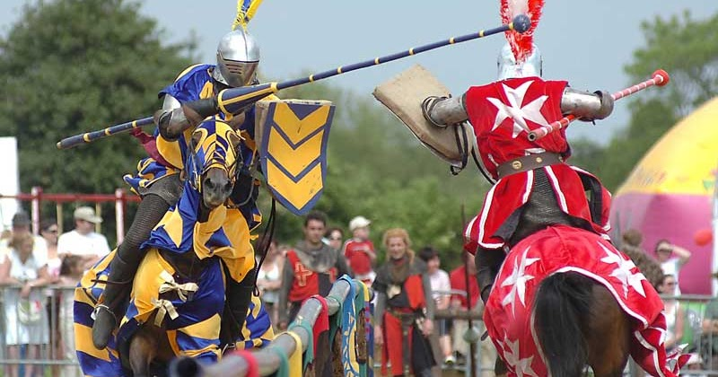

Olah Raga Jousting
1. Apa itu Jousting?
Jousting adalah olahraga berkuda yang paling identik dengan budaya ksatria di Eropa abad pertengahan. Olahraga ini menampilkan dua kesatria yang berlari saling berhadapan dengan tombak panjang untuk menguji kekuatan, ketangkasan, dan kemampuan mengendalikan kuda pada kecepatan tinggi. Walaupun terlihat sederhana, jousting sebenarnya memiliki struktur yang kompleks, mulai dari aturan keamanan, format turnamen, hingga penggunaan perlengkapan khusus yang dirancang untuk menahan benturan keras. Olahraga ini bukan hanya bentuk hiburan publik, tetapi juga simbol kehormatan, status sosial, dan identitas militer pada zamannya.
2. Sejarah Singkat Jousting
Jousting mulai muncul sekitar abad ke-11 sebagai bagian dari latihan militer bagi para kesatria. Pada masa itu, peperangan masih sangat bergantung pada pasukan berkuda berat, sehingga latihan menggunakan tombak dan bertempur dari atas kuda menjadi kebutuhan penting. Seiring berkembangnya sistem feodal di Eropa, para bangsawan mulai menyelenggarakan turnamen sebagai cara untuk mengasah kemampuan para prajurit mereka. Turnamen awal biasanya berlangsung keras dan tidak teratur, karena belum ada standar baku untuk keamanan atau penilaian. Baru pada abad ke-13 dan 14, jousting berkembang menjadi pertunjukan resmi yang memiliki aturan, arena khusus, dan klasifikasi perlengkapan yang lebih aman.

Memasuki abad ke-15, jousting mencapai puncak popularitasnya. Banyak kerajaan Eropa mulai menjadikannya sebagai bagian penting dari upacara kerajaan, festival militer, dan perayaan diplomatik. Turnamen-turnamen besar dapat menarik ribuan penonton dan melibatkan peserta dari berbagai wilayah. Pada masa ini, perkembangan teknologi pembuatan armor juga membuat pertandingan menjadi lebih spektakuler. Armor khusus turnamen dibuat lebih tebal di area tertentu untuk menahan benturan tombak, sementara arena pertandingan mulai menggunakan pembatas tengah yang membuat duel lebih terkontrol. Dalam periode ini, jousting menjadi simbol kemewahan bangsawan, bukan sekadar latihan perang.
Jousting berkembang dari latihan militer menjadi olahraga resmi dengan aturan ketat demi keselamatan peserta. Perubahan ini menunjukkan bagaimana budaya ksatria menyesuaikan diri dengan nilai-nilai sosial dan hiburan.
3. Penurunan Popularitas
Popularitas jousting mulai menurun pada abad ke-16 ketika perubahan teknologi peperangan memperkenalkan senjata api seperti arquebus dan kemudian musket. Keterampilan berkuda dengan tombak tidak lagi relevan dalam pertempuran modern. Selain itu, armor berat menjadi tidak praktis untuk digunakan secara militer dan hanya bertahan sebagai elemen seremonial. Meskipun masih dipertahankan dalam beberapa acara kerajaan, jousting perlahan kehilangan tujuan utamanya sebagai latihan militer. Faktor keamanan juga menjadi isu besar, karena banyak kesatria terkenal yang mengalami cedera parah atau kematian akibat benturan. Perubahan sosial dan politik Eropa akhirnya membuat jousting hanya tersisa sebagai tradisi dan bukan lagi olahraga populer.
4. Warisan Budaya Jousting di Masa Kini
Walaupun tidak lagi dipraktikkan sebagai olahraga utama, jousting meninggalkan jejak budaya yang besar. Festival sejarah di Inggris, Prancis, Jerman, dan beberapa negara Skandinavia sering menampilkan rekonstruksi jousting sebagai atraksi utama. Penelitian sejarah, museum armor, dan dokumentasi tradisi ksatria membantu menjaga warisan budaya olahraga ini. Dalam media modern, jousting menjadi inspirasi bagi film, serial televisi bertema abad pertengahan, hingga gim video. Nilai-nilai yang dikaitkan dengan jousting — keberanian, kehormatan, ketekunan, dan keahlian teknis — tetap menjadi simbol yang kuat dalam budaya populer.
5. Ringkasan Umum
Secara keseluruhan, jousting tidak hanya sekadar duel berkuda, tetapi bagian penting dari struktur sosial, militer, dan budaya Eropa abad pertengahan. Olahraga ini berkembang dari latihan perang menjadi pertunjukan besar yang sarat simbol dan tradisi. Meskipun akhirnya menurun akibat perubahan teknologi dan kebutuhan militer, jousting tetap dikenang sebagai salah satu ikon paling kuat dari masa ksatria. Hingga kini, minat masyarakat terhadap sejarah dan budaya abad pertengahan membuat jousting terus dipelajari, dipertunjukkan ulang, dan dihargai sebagai warisan sejarah dunia.